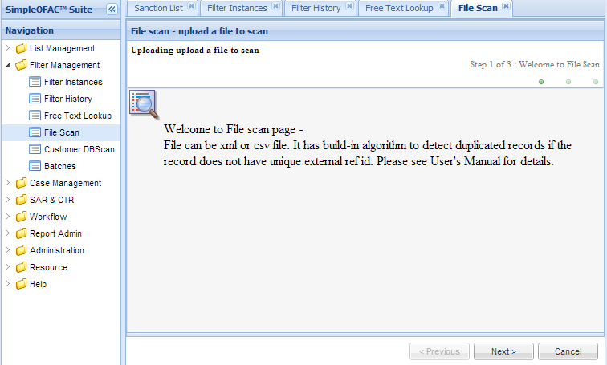
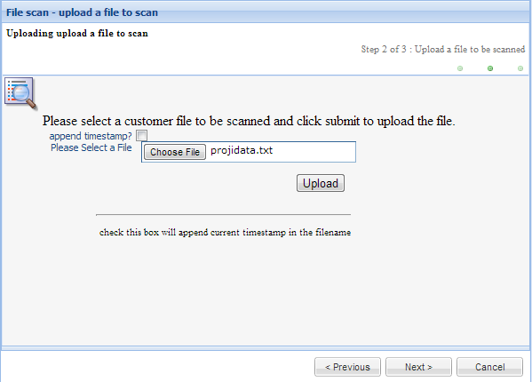
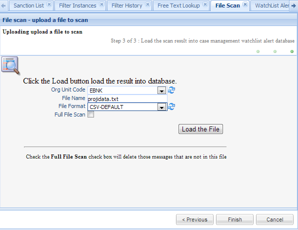
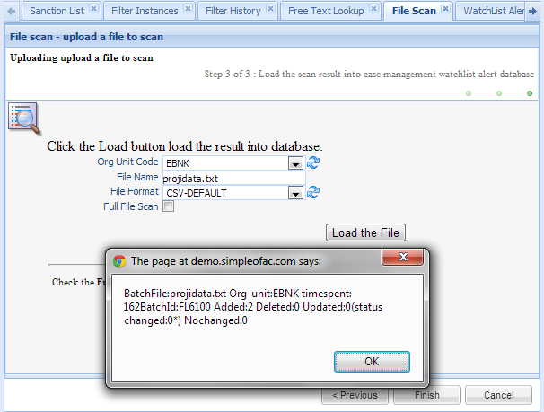

File Scan¶
File Scan allows user to scan large volume of data together. The format of the file can be csv or xml file. It has build-in algorithm to check the unique of each record, if the record itself does not have a unique Id. The scan result will be loaded into Watch List Alert database for review.
Click the File Scan in the left navigation menu under Screening management, a new File Scan Tab folder will be created in the right panel. T
Click on Next button to go to file upload page.
Click the Browse.. Button will open a window; then select a file to be uploaded. The file will be saved temporarily in the server, to avoid this upload file will override the file previous uploaded, user can check the “append timestamp” checkbox to append the current timestamp into file name. If the same file name exists in the server, it will be automatically renamed by adding _v# in the end of the file, where # can be 1, 2, 3, etc). For example, if the file name is customer_data_file.csv, it will be rename to customer_data_file_v1.csv.
Click Submit Button will upload the file into server, depends on the size of the size, It may take a couple minutes to upload.
Click OK to close this popup window; then click Next Button.
| Field Name | Description |
|---|---|
| OrgUnit Code | The Orgunit the watch list alert will be saved to. select a value from the orgunit dropdown list. This is a mandatory field. |
| File Fame | Preset from the previous page. This is the file just uploaded. |
| File Format | The format of this file just uploaded; Select a value from the dropdown list. This is a mandatory field. |
| Full File Scan | If this checkbox is checked, the watch list alerts for this ORGUNIT that are not in this file will be deleted from the database. |
Functional buttons¶
- Load the File: – click this button will load the file into watch list alert database. A popup window will show the total number of records in the file, and the number of added, deleted, updated and unchanged records.
Note
Users need to define a batch scan file format. Each client list (Organization Unit) can have different file formats or/and filter engine service parameters, based on its risks. Please see File Format for details.